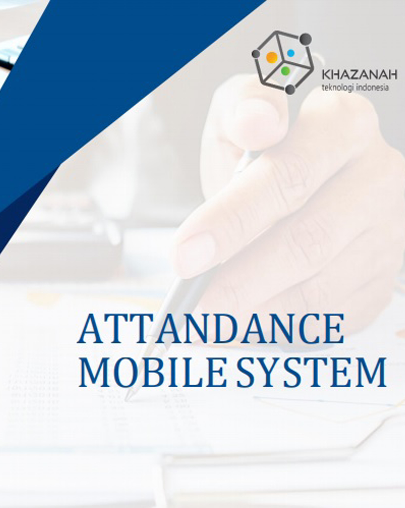
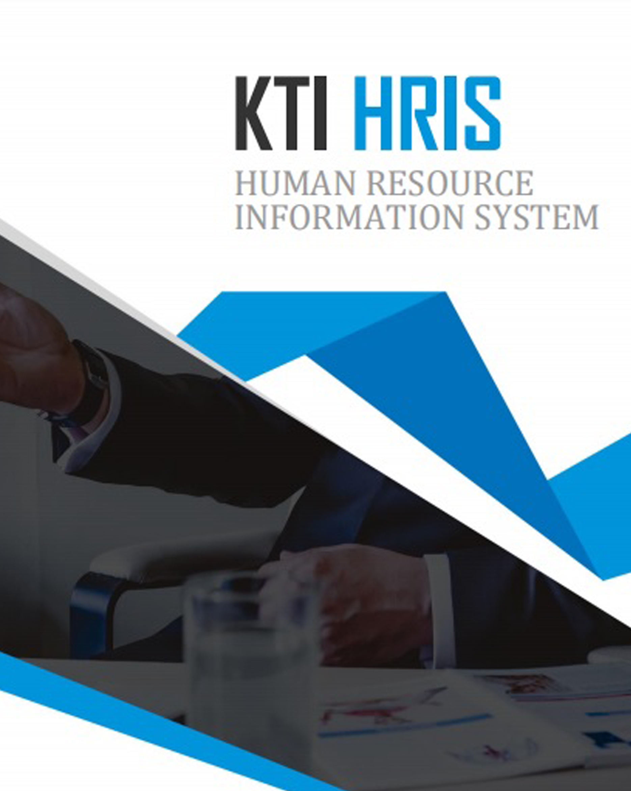
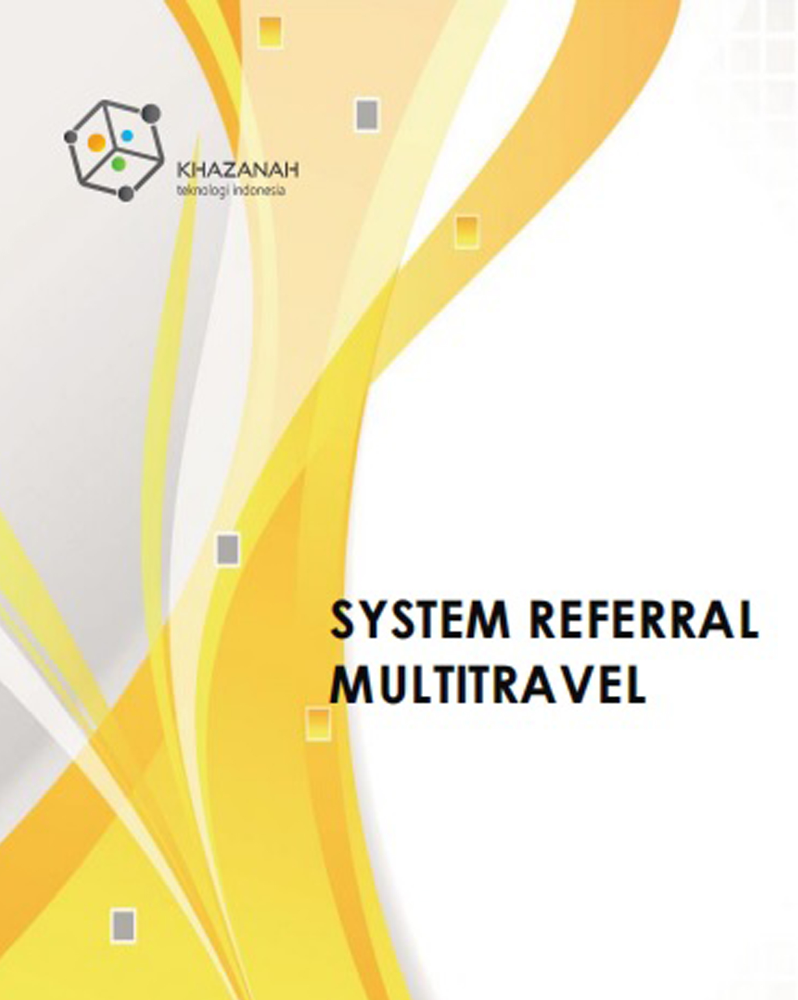

Perusahaan yang bergerak di bidang teknologi informasi yang fokus pada pengembangan aplikasi berbasis web dan mobile.
Visi
Menjadi perusahaan IT yang modern dan terdepan sesuai kebutuhan pelanggan
Misi
1. Meningkatkan kualitas layanan dan produk berbasis teknologi sesuai kebutuhan pelanggan
2. Mengutamakan kerja sama dan kemitraan usaha yang saling menguntungkan dan berkesinambungan
3. organisasi yang modern dan inovatif
4. Memberikan kontribusi positif kepada stakeholder
kami juga menyediakan produk dan layanan teknologi informasi seperti :
Software Development
PT. Khazanah Teknologi Indonesia menerapkan konsep systematis dalam implementasi pengembangan aplikasi berbasis teknologi informasi yang
disesuaikan dengan kebutuhan otomatisasi perusahaan secara integral.
Fintech/Digitalisasi
Inovasi di dunia start up dengan sentuhan teknologi modern memaksimalkan penggunaan teknologi untuk mengubah, mempertajam dan mempercepat
berbagai aspek pelayanan keuangan.
Opensource Solution
Dalam menunjang system administrasi, perusahaan dituntut menggunakan software dan system operasi berlisensi.
Tingginya biaya investasi dalam pengadaan software berlisensi, menjadi kendala utama perusahaan dalam menekan biaya operasional.
IT Support, Infrastructure & Maintenance
Untuk meningkatkan performa bisnis perusahaan, dibutuhkan dukungan IT yang meliputi man power, konfigurasi software dan hardware.
Aplikasi KTI Accounting Online System
merupakan aplikasi online berbasis dekstop yang tidak hanya dapat membantu perusahaan
dalam membantu proses pengolahan data dilakukan secara
otomatis, namun dapat meningkatkan profesionalitas dan
akuntabilitas perusahaan dalam pengelolaan keuangan secara
real time.
KTI Mobile Attendance hadir dengan dengan
fitur-fitur yang memungkinkan perusahaan melakukan digitalisasi semua proses administrasi HR,
baik dari rekam kehadiran, proses perizinan secara system, monitoring logbook activities Karyawan,
monitoring live location dll, serta dapat diintegrasikan dengan aplikasi lainnya melalui
web service yang telah disediakan oleh KTI.
KTI-HRIS hadir dengan menyediakan berbagai fitur dan modul
yang dibutuhkan oleh Perusahaan dalam mempermudah
pengelolaan HR dan Payroll. Didukung dengan modul yg
komprehensif menjadikan KTI-HRIS sebagai salah satu solusi dalam
penerapan system HR yang efektif dan dan efesien sehingga
membantu perusahaan dalam mengambil langkah-langkah
strategis dan taktis yang dibutuhkan oleh perusahaan dalam
mengembangkan Sumber Daya Manusia yang diharapkan.
Sharia Microfinancore merupakan hasil riset dan pengembangan
dari perpaduan beberapa aplikasi yang telah digunakan baik oleh Perusahaan Besar maupun LKMS yang berbasis
Koperasi. Dikembangkan dengan menitikberatkan pada alur proses yang sederhana namun mengedepankan proses
otorisasi data berjenjang, sehingga menciptakan tata kelola administrasi yang sehat dan sejalan dengan
prinsip Good Corporate Governance.Keterangan 4
Sehubungan dengan kebutuhan publikasi, marketing dan
transaksi dalam pengolaan bisnis umrah, maka melalui proposal
ini PT. Khazanah Teknologi Indonesia (PT. KTI) bermaksud untuk
menyampaikan penawaran kerjasama implementasi dan
pengembangan aplikasi “Web Referral Multitravel”.
PT. Khazanah Teknologi Indonesia
Didukung tenaga ahli yang berpengalaman, PT. Khazanah Teknologi Indonesia berkomitmen untuk memberikan
produk dan layanan terbaik yang fokus pada pengembangan aplikasi berbasis web dan mobile.
Pada Kesempatan ini, kami menawarkan project pengembangan aplikasi Web Referral Multitravel berbasis Online,
yang dapat dintegrasikan melalui aplikasi berbasis API. bagi Client. PT. Khazanah Teknologi Indonesia
tidak hanya memberikan penawaran solusi terbaik berdasarkan kebutuhan bisnis dan operasional dengan prinsip
pengembangan berkelanjutan.
tapi juga terus berinovasi untuk memberikan opsi terbaik terhadap pemanfaatan teknologi yang menyesuaikan
dengan trend teknologi global.
Bagi yang ingin menghubungi kami untuk consultasi terkait IT atau hal lainnya, bisa mengirimkan pesan melalui email.
APLIKASI ACCOUNTING SYSTEM
Aplikasi KTI Accounting Online System merupakan aplikasi online berbasis
dekstop.
Pada saat ini, telah banyak penyedia aplikasi akuntansi yang
mendukung kinerja baik secara offline maupun online. Namun
aplikasi yang efektif adalah aplikasi yang dibangun dengan prinsip
user-friendly, mudah digunakan, serta tidak membutuhkan waktu
yang lama untuk bisa mengoperasikan aplikasi itu secara optimal.
Aplikasi KTI Accounting Online System merupakan aplikasi online
berbasis dekstop yang tidak hanya dapat membantu perusahaan
dalam membantu proses pengolahan data dilakukan secara
otomatis, namun dapat meningkatkan profesionalitas dan
akuntabilitas perusahaan dalam pengelolaan keuangan secara
real time. Aplikasi KTI Accounting Online system juga telah
dilengkapi dengan fitur dan modul-modul yang simple, mudah,
praktis, cepat, akurat, serta dapat diintegrasikan dengan aplikasi
lainnya baik yang berbasis web maupun mobile system.
Date: January 2021
Client: Koperasi Karyawan BSM(Kopkar BSM)
Category: APPLICATION FEATURE
ATTANDANCE MOBILESYSTEM
KTI Mobile Attendance hadir
dengan dengan fitur-fitur yang memungkinkan perusahaan
melakukan digitalisasi semua proses administrasi HR.

Teknologi telah banyak menghadirkan tren pengelolaan tenaga
kerja melalui system aplikasi yang lebih fleksibel, salah satunya
adalah pengelolaan kehadiran melalui aplikasi mobile digital. Hal
ini merupakan sebuah terobosan yang efektif dalam melakukan
monitoring terhadap jam kerja dan kehadiran karyawan, tidak
hanya dalam jumlah kecil bahkan dapat mencakup skala ribuan
karyawan.
Menyikapi trend teknologi saat ini, KTI Mobile Attendance hadir
dengan dengan fitur-fitur yang memungkinkan perusahaan
melakukan digitalisasi semua proses administrasi HR, baik dari
rekam kehadiran, proses perizinan secara system, monitoring
logbook activities Karyawan, monitoring live location dll, serta
dapat diintegrasikan dengan aplikasi lainnya melalui web service
yang telah disediakan oleh KTI.
Software Architecture
NO
ITEM
DESCRIPTION
1
Application Core
Android Studio, XCode, Ionic
Framework
2
Database Server
MySQL
3
Application Platform
Mobile Application for
Android & IOS
4
Network Infrastructure
Intranet/Internet
Application Features
1. Attendence
1. Menentukan validasi lokasi kerja berdasarkan Geo Tagging
dengan beberapa metode yang telah ditentukan yaitu :
Berdasarkan WFH, Penentuan Lokasi kerja maupun live location
2. Face Recognition, dimana Karyawan harus melakukan selfie
dengan object selfie yang memastikan memiliki sifat gerak
untuk membantu validasi data absen
3. Laporan Kehadiran dan secara otomatis memunculkan
nama tempat dimana karyawan tersebut melakukan absensi
4. Kalender Kerja, Untuk membantu menginformasikan dan
melakukan set up hari kerja bagi perusahaan dan karyawan
5. Tools yang terdiri dari :
a)
Daftar Lokasi Absensi yaitu menu yang dapat memberikan
keleluasaan kepada user untuk membuat titik kordinat
lokasi dimana Karyawan dapat melakukan absensi di
tempat tersebut beserta radius toleransi jarak yang
ditentukan dari titik kordinat
b)
Group Absensi yaitu, menu dimana user dapat melakukan
set up secara khusus untuk karyawan yang diberikan
keleluasaan melakukan absensi di banyak tempat,
sehingga karyawan tersebut tidak perlu ke Kantor
melakukan absensi
2. Logbook Activities
1. Menu yang digunakan untuk mengisi aktifitas pekerjaan yang
dilakukan oleh Karyawan baik Ketika bekerja di Kantor maupun
di Rumah.
2. Rekap Logbook Acitivities yaitu list aktifitas apa saja yang
dilakukan oleh karyawan selama hari dan jam kerja
berlangsung. Baik perusahaan maupun Karyawan ybs, dapat
memantau pekerjaan yang telah dikerjakan hingga saat ini.
3. Employee Self Service
1. Memungkinkan karyawan untuk melakukan update informasi
data pribadi terkait : Riwayat Pekerjaan, Data Kompetensi,
Data Sertifikasi, Data Organisasi, Referensi dll. Yang semuanya
sudah terkoneksi dengan system HR dan akan secara
otomatis update setelah mendapat persetujuan dari User HR
2. Slip Gaji, Karyawan dapat memantau secara langsung gaji
yang bersangkutan tanpa harus meminta persetujuan HR
3. Perizinan Online, Melakukan pengajuan perizinan dengan
media aplikasi seperti Cuti, Sakit, Telat, Lembur dll.
4. Realtime Tracking
Perusahaan dapat memantau posisi Karyawan secara real-time
selama Karyawan ybs mengaktifkan fasilitas GPS di gawai
masing-masing
Application Architecture
1. Multi Branch & Sub Branch ; dapat berjalan dengan multi unit
kerja hingga sub-subnya
2. Multi User & Multi Tasking, dapat berjalan dengan banyak user
serta aktifitas secara bersamaan
3. Online Based System, sehingga dapat diakses dimana saja
melalui jaringan internet
4. User Friendly Program Interface
5. Fasilitas export/import csv, pdf dan excel
6. Tersedia fasilitas API dan framework yang siap diaplikasikan
pada platform lainya
System Security
Untuk menjamin keamanan sistem, aplikasi ini menerapkan
beberapa metode security role, sebagai berikut :
1. Authentication : Proses identifikasi pengguna sehingga dapat
dikenali berdasarkan hak akses
2. Authorization : Proses pembatasan pengguna terhadap hak
akses/ bisnis pada proses tertentu
3. User Credential : Data yang dibutuhkan pengguna untuk dapat
dikenali oleh sistem
4. Role : Suatu jenis hak akses yang diberikan kepada setiap
pengguna
5. Encryption : Proses multi enkripsi terhadap data dan kode yang
digunakan dalam sistem.
6. Mendukung kinerja OEM dimana lisensi penggunaan hanya
dapat dilakukan pada device yang telah ditentukan.
Date: January 2021
Client: Koperasi Karyawan BSM(Kopkar BSM)
Category: APPLICATION FEATURE
KTI HRIS
KTI-HRIS hadir dengan menyediakan berbagai fitur dan modul
yang dibutuhkan oleh Perusahaan dalam mempermudah
pengelolaan HR dan Payroll.

Human Resource Information System (HRIS) merupakan perangkat
lunak yang dibutuhkan oleh Perusahaan dalam mengelola
administrasi kepegawaian, kehadiran, maupun payroll
management. Dengan dukungan HRIS perusahaan dapat secara
optimal memastikan admistrasi kepegawaian berjalan dengan
baik, karena dukungan HRIS menjadikan pengelolaan akan lebih
terpadu dan terkontrol secara otomatis melalui layanan aplikasi.
KTI-HRIS hadir dengan menyediakan berbagai fitur dan modul
yang dibutuhkan oleh Perusahaan dalam mempermudah
pengelolaan HR dan Payroll. Didukung dengan modul yg
komprehensif menjadikan KTI-HRIS sebagai salah satu solusi dalam
penerapan system HR yang efektif dan dan efesien sehingga
membantu perusahaan dalam mengambil langkah-langkah
strategis dan taktis yang dibutuhkan oleh perusahaan dalam
mengembangkan Sumber Daya Manusia yang diharapkan.
Aplikasi KTI-HRIS juga didukung dengan Aplikasi Mobile ESS yang
memberikan pengalaman untuk menjalankan aktifitas HR tidak
hanya melalui media online web based tetapi juga mobile access.
Sehingga dengan fitur-fitur yang tersedia, memungkinkan
perusahaan melakukan digitalisasi semua proses administrasi HR,
baik dari rekam kehadiran, proses perizinan secara system,
monitoring logbook activities Karyawan serta dapat diintegrasikan
dengan aplikasi lainnya melalui web service yang telah disediakan
oleh KTI
Date: January 2021
Client: Koperasi Karyawan BSM(Kopkar BSM)
Category: APPLICATION ARCHITECTURE DAN SYSTEM SECURITY
SHARIA MICROFINANCORE
Sharia Microfinancore merupakan hasil riset dan pengembangan dari perpaduan
beberapa aplikasi yang telah digunakan baik oleh Perusahaan Besar maupun LKMS yang berbasis Koperasi.
PT Khazanah Teknologi Indonesia (KTI) terus berusaha melakukan
terobosan inovasi pada produk-produk yang berbasis IT, terutama
pada sektor layanan keuangan berbasis Syariah. Sharia
Microfinancore merupakan salah satu produk KTI yang
dikembangkan dan diperuntukan bagi KSPPS/USPPS, LKMS serta
Perusahaan Pembiayaan Syariah. Didesign secara integral untuk
mendukung kinerja KSPPS/USPPS, LKMS maupun perusahaan
pembiayaan berbasis Syariah agar dapat berkembang dan
menyesuaikan dengan trend teknologi global. Berbekal pengalaman
dan pengetahuan dalam mengelola perusahaan berbasis keuangan
Syariah, Sharia Microfinancore hadir sebagai solusi, tidak hanya
membantu dalam pengelolaan administrasi secara efektif & efesien,
tetapi juga memberikan dukungan konsep bisnis proses yang lebih
sederhana dan akuntabel. Sehingga dapat membantu mewujudkan
pencapaian visi dan misi perusahaan.
Sharia Microfinancore merupakan hasil riset dan pengembangan dari
perpaduan beberapa aplikasi yang telah digunakan baik oleh
Perusahaan Besar maupun LKMS yang berbasis Koperasi.
Dikembangkan dengan menitikberatkan pada alur proses yang
sederhana namun mengedepankan proses otorisasi data berjenjang,
sehingga menciptakan tata kelola administrasi yang sehat dan
sejalan dengan prinsip Good Corporate Governance.
Dengan menggunakan teknologi yang mutakhir, Sharia
Microfinancore memberikan pengalaman untuk menjalankan
aktifitas transaksi tidak hanya melalui media online web based tetapi
juga mobile access. Sharia Microfinancore juga dikembangkan untuk
menyesuaikan dengan gaya hidup millenial yang serba praktis serta
diciptakan fully digital yang dilengkapi dengan sistem digital
verification, digital scoring hingga digital signature. Sehingga dengan
fitur-fitur yang tersedia, sangat memungkinkan perusahaan
melakukan digitalisasi semua proses administrasi dan transaksi yang
dapat dimonitoring secara real time di gawai masing-masing para
pemangku kepentingan.
Date: January 2021
Client: Koperasi Karyawan BSM(Kopkar BSM)
Category: SOFTWARE ARCHITECTURE
SYSTEM REFERRAL MULTITRAVEL
Sehubungan dengan kebutuhan publikasi, marketing dan
transaksi dalam pengolaan bisnis umrah.

Indonesia merupakan salah satu negera dengan populasi muslim
terbesar di dunia. Hal ini yang mendasari banyaknya jumlah umat
Islam yang berangkat ke Tanah Suci untuk melaksanakan ibadah
umrah. Umrah merupakan Ibadah bagi umat Islam yang
keberangkatannya tidak harus menunggu antrian seperti ibadah
haji. Sehingga hal ini yang mendasari banyaknya pihak swasta
maupun pemerintah terus berupaya untuk memperbaiki
kebijakan, layanan serta fasilitas yang layak guna mengakomodir
jamaah yang akan berangkat ke tanah suci untuk melaksanakan
ibadah umrah.
Sehubungan dengan kebutuhan publikasi, marketing dan
transaksi dalam pengolaan bisnis umrah, maka melalui proposal
ini PT. Khazanah Teknologi Indonesia (PT. KTI) bermaksud untuk
menyampaikan penawaran kerjasama implementasi dan
pengembangan aplikasi “Web Referral Multitravel”.
Web Referral Multitravel merupakan aplikasi online berbasis web
yang tidak hanya dapat membantu perusahaan tours & travel
dalam meningkatkan marketing umrah, namun dapat mengelola
transaksi serta aktifitas bisnis sehingga perusahan dapat
meningkatkan profesionalitas bisnis dan customer’s trust